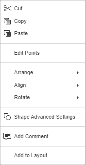

Manipulisanje objektima na slajdu
U Presentation Editor-u možete ručno menjati veličinu, pomerati i rotirati različite objekte na slajdu koristeći specijalne ručice. Takođe možete precizno definisati dimenzije i poziciju nekih objekata koristeći desnu bočnu traku ili prozor Advanced Settings.
Napomena: lista prečica na tastaturi koje se mogu koristiti pri radu sa objektima dostupna je ovde.
Promena veličine objekata
Da biste promenili veličinu automatskog oblika/slike/grafikona/tabele/tekstualnog okvira, prevucite male kvadrate koji se nalaze na ivicama objekta. Da biste zadržali originalne proporcije izabranog objekta tokom promene veličine, držite pritisnut taster Shift i prevucite jednu od ugaonih ikonica.
Da biste precizno definisali širinu i visinu grafikona, izaberite ga na slajdu i koristite odeljak Size na desnoj bočnoj traci koja će se aktivirati.
Da biste precizno definisali dimenzije slike ili automatskog oblika, kliknite desnim tasterom miša na željeni objekat na slajdu i izaberite opciju Image/Shape Advanced Settings iz menija. Unesite potrebne vrednosti na tabu Size u prozoru Advanced Settings i kliknite na OK.
Promena oblika automatskih oblika
Prilikom izmene nekih oblika, na primer strelica ili oblačića, dostupna je i žuta ikonica u obliku romba . Ona omogućava podešavanje određenih aspekata oblika, na primer dužine vrha strelice.
Da biste promenili oblik automatskog oblika, možete koristiti i opciju Edit Points iz kontekstnog menija.
Opcija Edit Points koristi se za prilagođavanje ili promenu zakrivljenosti oblika.
-
Da biste aktivirali tačke sidra oblika, kliknite desnim tasterom miša na oblik i izaberite Edit Points iz menija. Crni kvadrati koji se pojave predstavljaju tačke na kojima se dve linije spajaju, dok crvena linija ocrtava oblik. Kliknite i prevucite tačku da biste promenili njen položaj i oblik ivice.

-
Kada kliknete na tačku sidra, pojaviće se dve plave linije sa belim kvadratima na krajevima. To su Bezijeove ručice koje omogućavaju kreiranje krive i promenu njene glatkoće.
-
Dok su tačke sidra aktivne, možete ih dodavati i brisati:
- Da biste dodali tačku, držite pritisnut taster Ctrl i kliknite na mesto gde želite da dodate tačku sidra.
- Da biste obrisali tačku, držite pritisnut taster Ctrl i kliknite na nepotrebnu tačku.
Pomeranje objekata
Da biste promenili položaj automatskog oblika/slike/grafikona/tabele/tekstualnog okvira, koristite ikonicu koja se pojavljuje kada pređete kursorom miša preko objekta. Prevucite objekat na željenu poziciju bez puštanja tastera miša. Da biste pomerali objekat za po jedan piksel, držite pritisnut taster Ctrl i koristite strelice na tastaturi. Da biste pomerali objekat striktno horizontalno ili vertikalno, držite pritisnut taster Shift tokom prevlačenja.
Da biste precizno definisali položaj slike, kliknite desnim tasterom miša na slajdu i izaberite opciju Image Advanced Settings iz menija. Unesite potrebne vrednosti u odeljku Position u prozoru Advanced Settings i kliknite na OK.
Rotiranje objekata
Da biste ručno rotirali automatski oblik/sliku/tekstualni okvir, postavite kursor miša iznad ručice za rotaciju i prevucite je u smeru kazaljke na satu ili suprotno. Da biste ograničili ugao rotacije na korake od 15 stepeni, držite pritisnut taster Shift tokom rotiranja.
Da biste rotirali objekat za 90 stepeni ulevo ili udesno, ili ga preokrenuli horizontalno ili vertikalno, možete koristiti odeljak Rotation na desnoj bočnoj traci koja će se aktivirati kada izaberete objekat. Da biste je otvorili, kliknite na ikonicu Shape settings ili Image settings sa desne strane. Kliknite na jedno od dugmadi:
- za rotiranje objekta za 90 stepeni ulevo
- za rotiranje objekta za 90 stepeni udesno
- za horizontalno okretanje objekta (sleva nadesno)
- za vertikalno okretanje objekta (odozgo nadole)
Takođe možete kliknuti desnim tasterom miša na objekat, izabrati opciju Rotate iz kontekstnog menija i zatim koristiti neku od dostupnih opcija rotacije.
Da biste rotirali objekat za tačno određen ugao, kliknite na link Show advanced settings na desnoj bočnoj traci i koristite tab Rotation u prozoru Advanced Settings. Unesite potrebnu vrednost u stepenima u polje Angle i kliknite na OK.